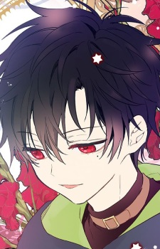

Informasi Anime
Genre: Drama, Fantasy
Ditayangkan: 28 september 2025 sampai ?
Tahun Rilis: 2025
Jumlah Episode: 16
Durasi: 21 menit
Studio: Colored Pencil Animation
Platform Streaming:
Mofa Gongzhu de Xiao Fannao
Seorang wanita dari dunia modern tiba-tiba bereinkarnasi ke tubuh bayi Athanasia de Alger Obelia, putri dari kaisar
kejam di sebuah kerajaan. Ia menyadari bahwa di masa lalu Athanasia akan dibunuh oleh ayahnya sendiri karena intrik
istana. Dengan ingatan dari kehidupan sebelumnya, Athanasia bertekad mengubah nasib tragisnya dengan cara apapun agar
ayahnya tidak mengkhianatinya
Sayangnya upayanya tidak semudah itu. Politik kerajaan, perebutan kekuasaan oleh bangsawan tinggi, dan konflik intrik
internal membuat rencananya berantakan. Ibunya sudah tiada, saudara tirinya penuh kecemburuan, dan pengkhianat lama di
istana mengancam untuk menghancurkan segalanya.
Dalam situasi genting itu Athanasia harus terus beradaptasi, mencari cara untuk bertahan hidup, dan mencari sekutu agar
kekejaman tidak terulang di masa depan. Cerita menjadi perjuangan cerdas antara kelangsungan hidup, kepercayaan, cinta,
dan pengkhianatan di dunia yang kejam.
Character & Voice Actor

Lucas
Okamoto Nobuhiko


Athanasia de Alger Obelia
Morohoshi Sumire


Claude de Alger Obelia
Maeno Tomoaki


Felix Robane
Kimura Ryouhei